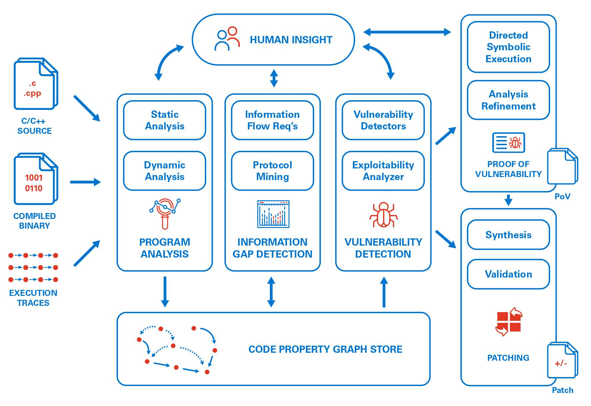
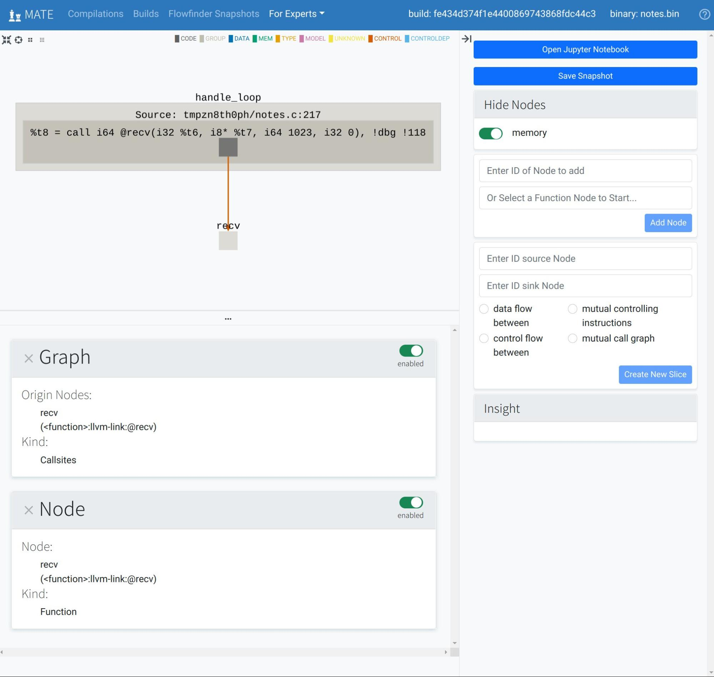
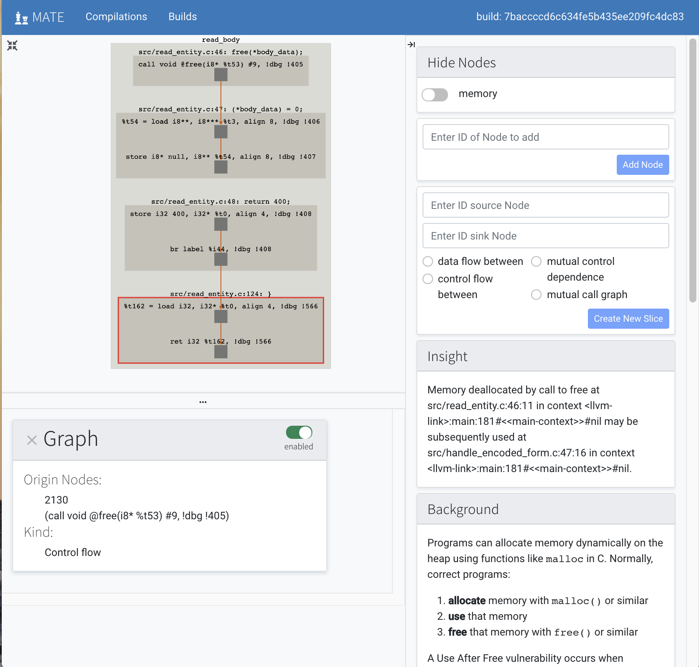
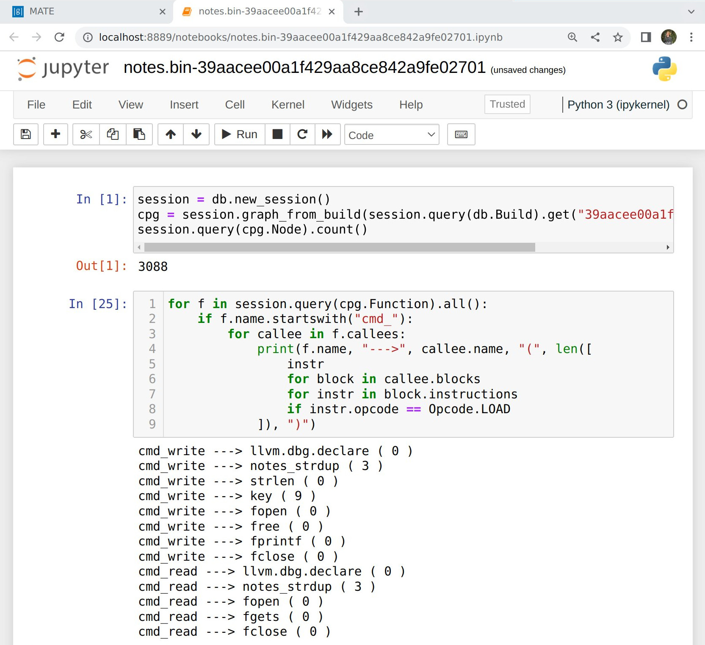
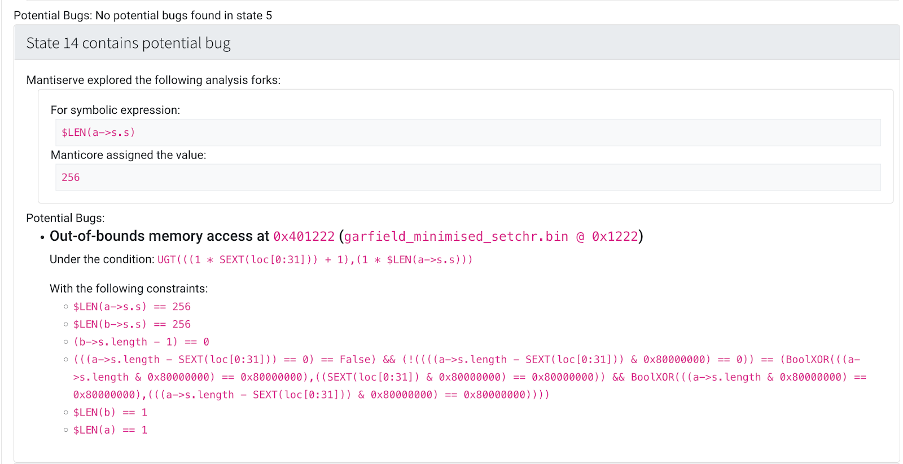

Overview¶
Note
This page provides a high-level overview of MATE. To get started using MATE right away, see Quick Start.
MATE is a suite of tools for interactive program analysis with a focus on hunting for bugs in C and C++ code. MATE unifies application-specific and low-level vulnerability analysis using code property graphs (CPGs), enabling the discovery of highly application-specific vulnerabilities that depend on both implementation details and the high-level semantics of target C/C++ programs.
MATE primarily finds vulnerabilities by static program analysis over the target’s CPG, which combines representations of a program’s syntax, control-flow, and dependencies into a unified graph structure that can be queried to identify potential flaws. The MATE CPG consists of the target’s:
abstract syntax tree (AST)
call graph (CG)
control-flow graph (CFG)
inter-procedural control-flow graph (ICFG)
inter-procedural dataflow-graph (DFG)
control-dependence graph (CDG)
points-to graph (PTG)
source-code to machine-code mapping
memory layout and DWARF type graph
At a very high level, here’s how MATE is used:
The user inputs the source code of a C or C++ program
MATE compiles and analyzes the program, creating one CPG per binary
The user attempts to find vulnerabilities in the program by using the MATE tools
MATE Tools¶
MATE provides several tools for exploring and analyzing the program’s code property graph (CPG).
Flowfinder¶
Flowfinder is an interactive, graphical, browser-based user interface for exploring a program’s CPG. Given a potential vulnerability discovered via MATE’s automated analyses, Flowfinder displays relevant fragments of the CPG that explain relationships between program inputs, outputs, and computations. Similar to other program analysis tools such as IDA Pro, Binary Ninja, and angr management, Flowfinder is designed to help answer questions such as “How does this data get from here to there and how is it changed along the way” or “If I can control this buffer, what effect can I have on the execution of the program?” By leveraging the detailed information in the MATE CPG, Flowfinder is intended to enable interprocedural analysis of program dataflows at a relatively high level of abstraction. Rather than navigating by scrolling or jumping between detailed level views of the program’s disassembly or source code, Flowfinder is designed to support expanding and contracting representations of code and data as needed and creating and manipulating visualizations of high-level flows between different components.
See Using Flowfinder for more information.
POI Queries¶
MATE ships with a number of automated analyses that detect potential vulnerabilities, called Points of Interest (POIs). These detectors are written using the MATE Python query API; it’s easy to write additional application-, domain-, or API-specific detectors. Potential vulnerabilities found by these queries can be viewed in Flowfinder for collaboration and triage.
See Points of Interest for more information.
Notebooks¶
MATE has a Python API for querying the CPG and exposes browser-based, interactive Jupyter notebooks with this query interface pre-loaded. These notebooks can be used to write complex, recursive, whole-program queries that answer detailed questions like “What sequences of function calls can lead from point A to point B in this program?” or “Can user input flow into a memory location with a specific struct type, and from there to some particular function without passing through one of these three sanitization routines?” These notebooks can be used for one-off explorations, or as a platform for users to build reusable apps on the MATE platform (such as UsageFinder).
See MATE Python Notebooks for more information.
Under-Constrained Manticore¶
MATE provides a web UI for exploring programs with the Manticore symbolic execution engine in an under-constrained mode. Unlike traditional symbolic execution which begins at the program entry point and executes until the program exits, under-constrained symbolic execution starts at an arbitrary function. This specificity means that under-constrained symbolic execution can analyze parts of programs that would be too large or complex for traditional symbolic execution.
Symbolic execution enables bit-precise local reasoning about memory and arithmetic, which complements MATE’s higher-level inter-procedural data- and control-flow analyses.
See Under-constrained Manticore for more information.
UsageFinder¶
UsageFinder is a tool for finding vulnerabilities that result from incorrect usage of internal or external APIs.
See UsageFinder for more details.
Other MATE Components¶
In addition to the above user-facing tools, the following are a few components of MATE that can be used to build other tools. For a comprehensive list of MATE’s components, see Architecture.
The Query Interface¶
MATE provides a SQLAlchemy-based Domain Specific Language (DSL) for querying the CPG, embedded in Python. It has abstractions relevant to program analysis, for example, control- and data-flow path queries.
See CPG Query API for more information.
REST API and CLI¶
Much of MATE’s functionality is exposed via a REST API, and there is a CLI for interacting with this API.
Pointer Analysis¶
MATE uses a precise, context-sensitive pointer analysis for C and C++ that allows for accurate, narrow tracking of data- and control-flow through the program under analysis.
See Points-to analysis for more information.
Limitations¶
MATE has several important limitations:
MATE analyzes only statically-linked code, so it can’t find bugs or follow control- and data-flows in dynamically-linked libraries without users writing detailed MATE Signatures for external code.
MATE analyzes LLVM bitcode. In practice, obtaining LLVM bitcode requires access to the source code, that the project can be compiled using clang/clang++, and may require some mucking around with the build system. Additionally, it’s much easier to use and understand MATE given familiarity with the LLVM language, but such familiarity is fairly uncommon.
MATE’s static analysis is fairly heavy-weight. The pointer analysis in particular requires a significant amount of time and RAM, on the order of hours and up to dozens of GB for large programs. Furthermore, these requirements don’t relate predictably to program size or other features.
MATE is still research-grade software. We have worked hard to make it robust, but not all of MATE’s tools and features will work well on all programs.
Project Status¶
MATE is not actively developed by Galois, Inc. Please reach out to the email address “mate at galois dot com” if you’d like to discuss further work on MATE!